CYCLOID GENERATOR
Overview
A cycloidal gear generator I built with the Desmos API. It takes four numbers (the overall radius R, the number of pins N, the pin radius S and the eccentricity E) and gives two equations, x(t) and y(t), that paste straight into Fusion 360's Equation Driven Curve add-in (with z(t) = 0). Every cycloidal actuator in my 6DOF arm came from it.
The base curve
Without the pins, the curve is an epitrochoid: a circle of radius R/N rolling around a fixed circle of radius R(N − 1)/N, traced by a point that's E away from the rolling circle's center.
The small circle goes around the big one N − 1 times, so the disc ends up with N − 1 lobes, one less than the number of pins.
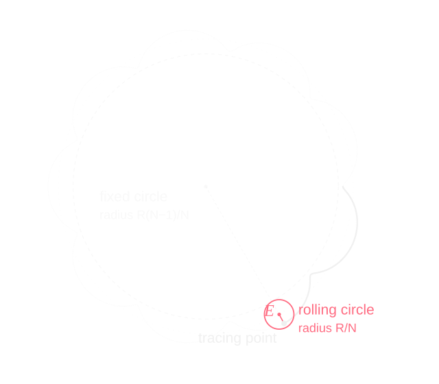
Offsetting for the pins
The pins aren't points, so the disc can't follow that curve directly. It has to be offset inward by the pin radius S, perpendicular to the curve. b is the angle of the curve's normal, which is where the S cos(t − b) terms come from. These are the equations the generator actually uses:
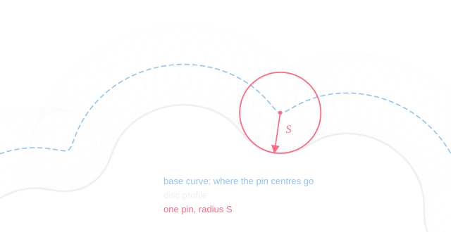
Picking parameters
Not every combination works. If EN/R reaches 1, the base curve gets cusps (and loops past that), and the arctan in b breaks down at the same point. The other limit is the pin size: if S is bigger than the radius of curvature at the tips of the lobes, the offset folds over itself and you get undercut.
The defaults (R = 1.8, N = 28, S = 0.1, E = S/2) come out to EN/R ≈ 0.78, with the pins at about half the size where undercut would start.
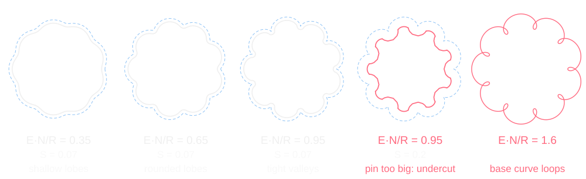
Gear ratio
In the gearbox, the pins are fixed and the input shaft drives the disc's center around in a circle of radius E. Each time the input goes around once, the disc moves over by one lobe, so it turns once in the opposite direction for every N − 1 turns of the input. With the default 28 pins that's 27:1. The simulation above runs on the generator's equations.
The actuator
The arm needed reducers to get more torque and precision out of its NEMA stepper motors, so I made them with the generator instead of buying them.
The motor turns an eccentric input, offset by E, which drives the disc around inside a ring of fixed pins, and an output plate picks up the disc's slow turning. The result is a 28:1 gearbox with nearly zero backlash that's still backdrivable.
The parts are laser cut from acrylic, which is why everything is see-through. They can be 3D printed instead if laser cutting isn't an option.
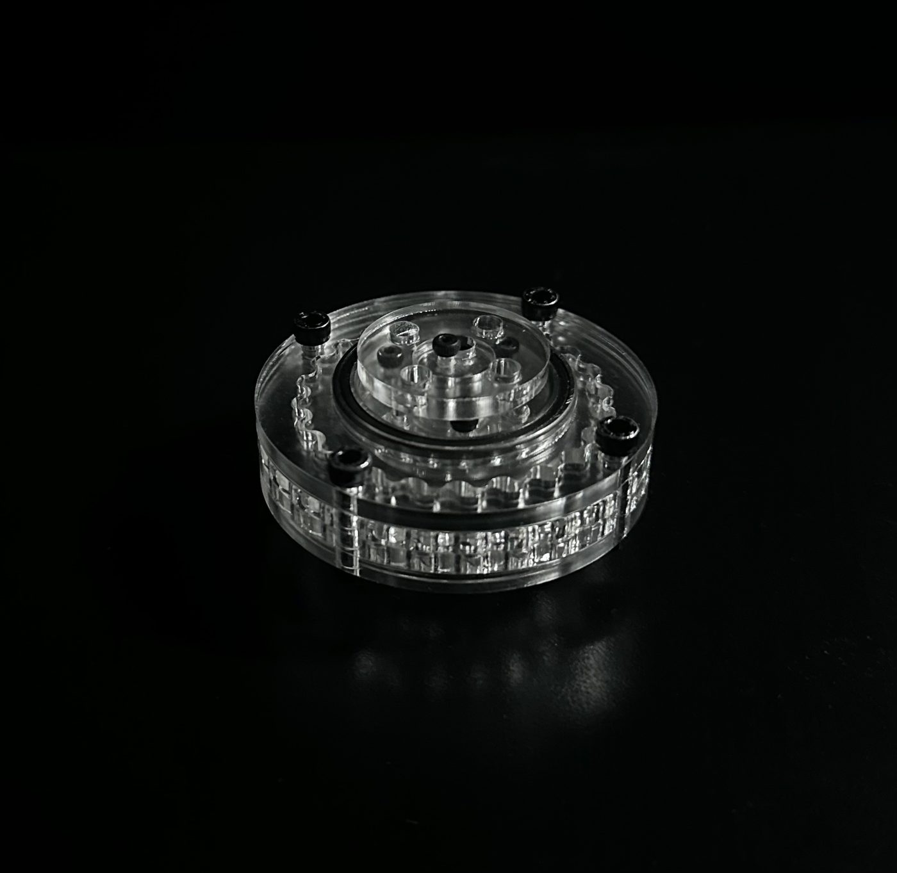
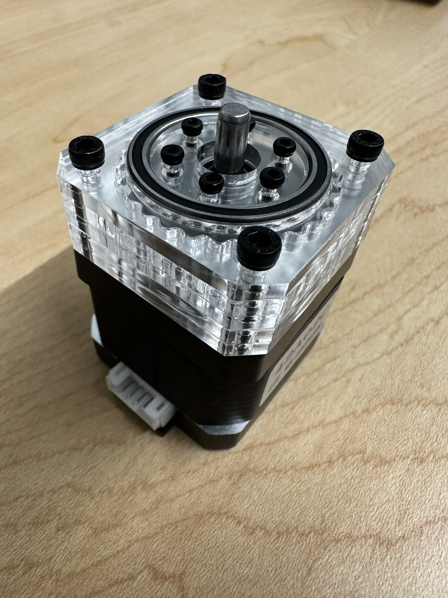
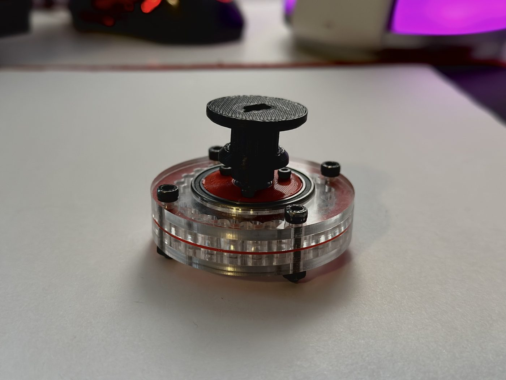
In the arm
Every actuator in the 6DOF arm uses one of these.
Try it
You can try the generator below, or get an exportable version here. It can also animate the cycloid, and there's a slider for the number of pins.
I had a lot of "remnant" functions from when I was building it, versions that would work but couldn't easily be used in Fusion 360. I kept them in the generator (turned off) in case you want to play around or see simpler ways to make epitrochoids.
Liquid piston engine
I also used the generator to make the curves for my pneumatic liquid piston engine. All I had to do was play around with the parameters until I found something that would run smoothly. The parts got a few small changes in CAD afterwards for material tolerances, but the curves themselves worked out.
It's made from laser-cut 1/8" acrylic, both blue and clear, with MR106 bearings, M3 bolts and synthetic grease.
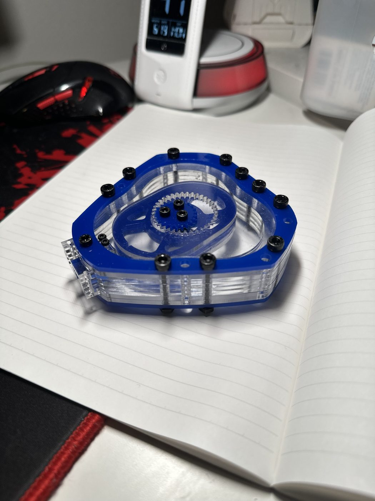
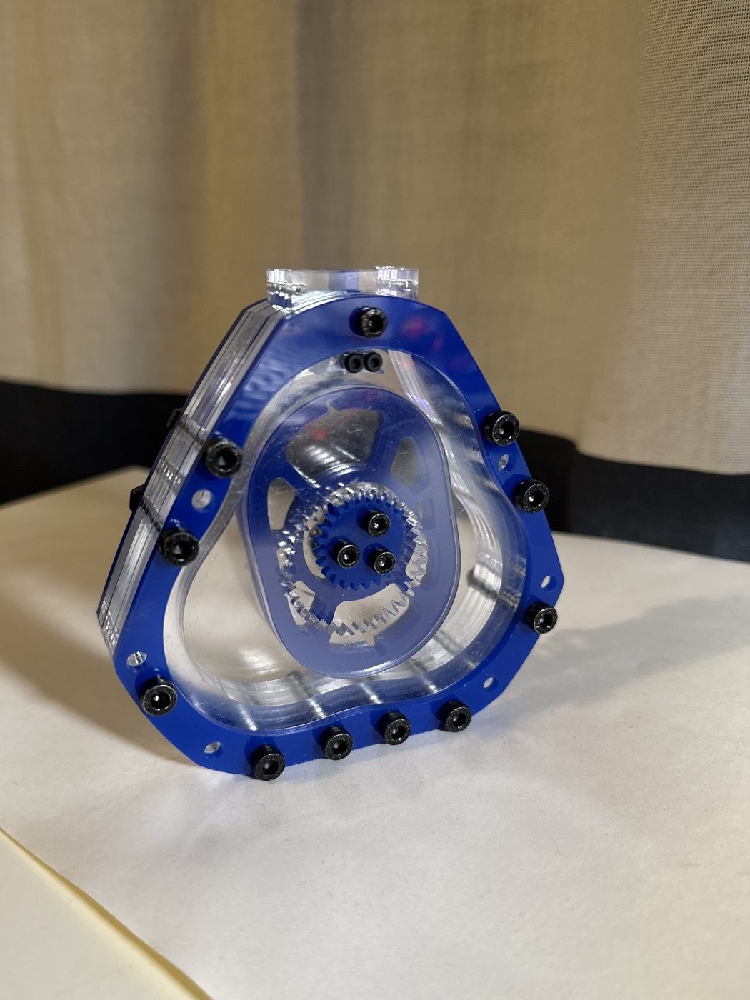
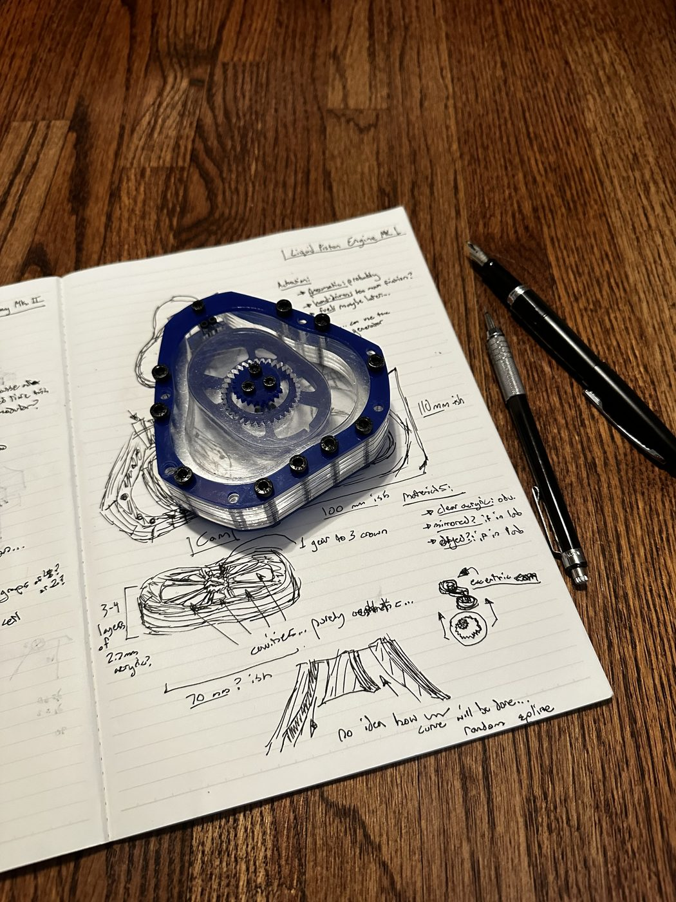
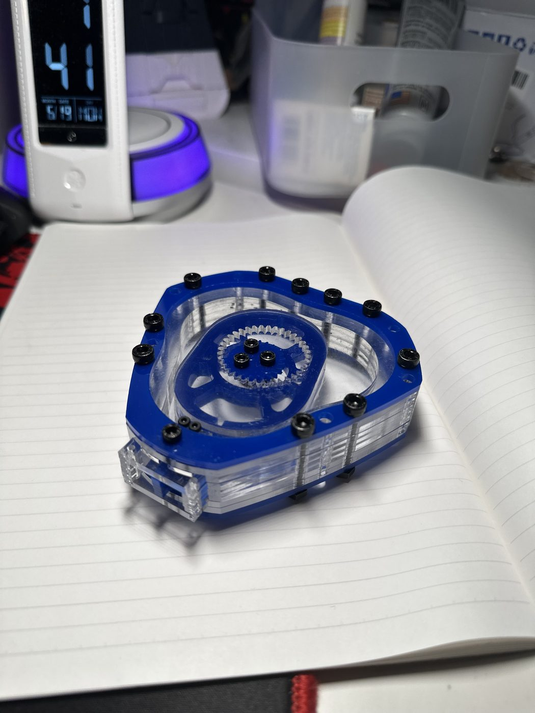
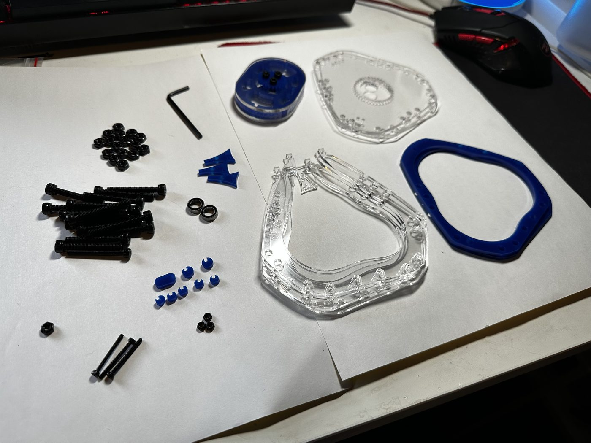
The numbers I used are in this version of the generator: